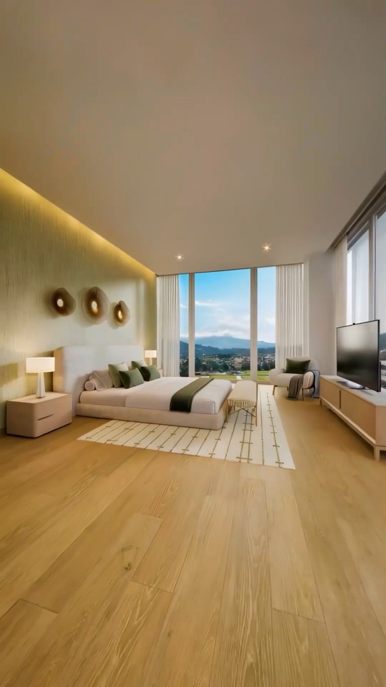
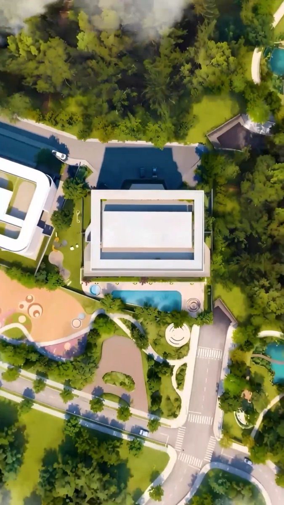
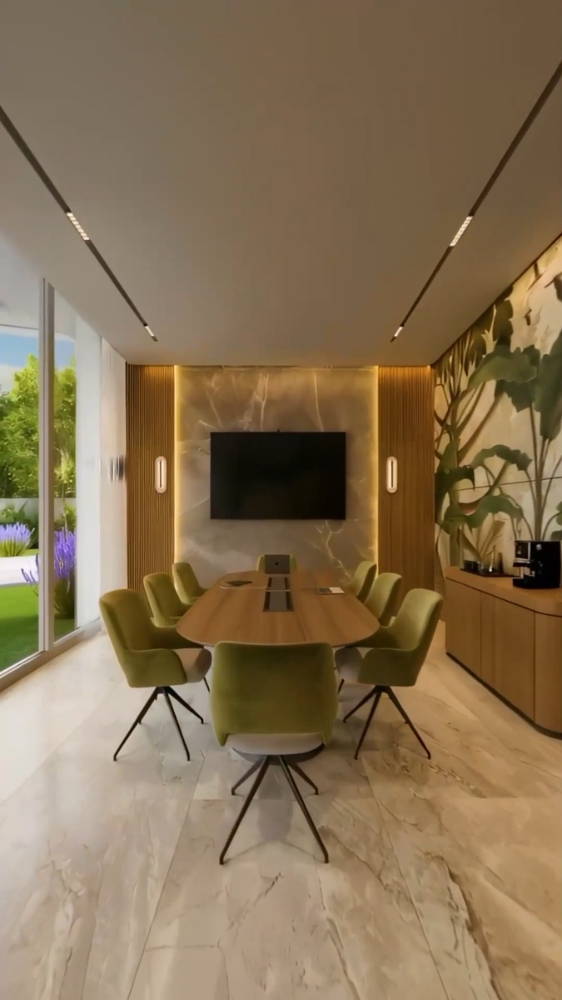
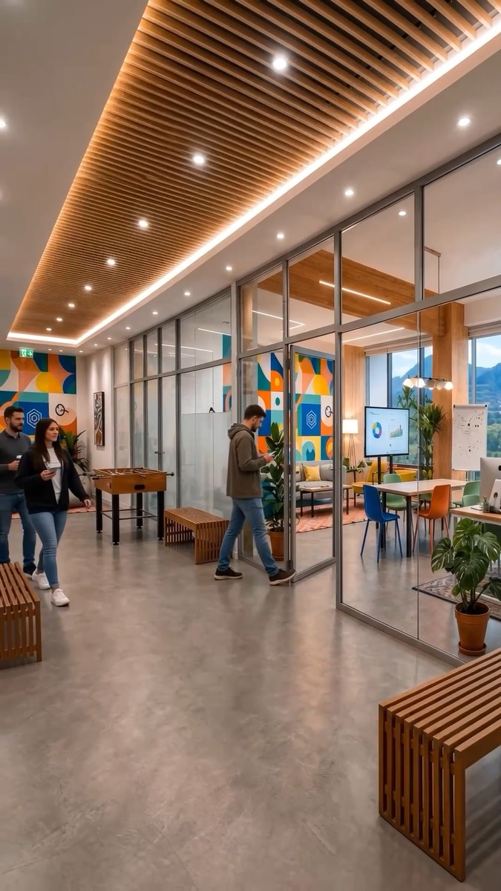

0:50
Skypark: recorrido interior
Renders de departamentos y amenidades convertidos en un recorrido continuo, del ingreso a la habitación con vista.
Fotografía, video con inteligencia artificial y videografía publicitaria para que cada pieza de su perfil y de su pauta esté a la altura de lo que está construyendo.
Cuando un proyecto es caro, la decisión empieza mucho antes de la visita: en un reel, en una historia, en un anuncio que aparece entre dos videos. Si esa primera impresión no transmite el mismo nivel que los acabados, el precio empieza a sentirse alto.
Luz, encuadre, ritmo y color le dicen al comprador cuánto vale lo que ve. Un contenido cuidado sostiene el ticket; uno improvisado lo pone en duda.
Invertir en anuncios con piezas débiles solo hace que más gente vea algo que no convence. La inversión rinde cuando la pieza ya está a la altura.
Avance de obra, proyecto terminado y lifestyle tienen que sentirse como la misma marca. Esa coherencia es la que construye confianza.
Producimos contenido para uno de los proyectos inmobiliarios más grandes del Ecuador.
Un proyecto de esa escala exige que cada pieza cuide el nivel de la marca: torres residenciales, oficinas, hospital, centro comercial y áreas verdes, contados con la misma calidad en el perfil y en la pauta.




Fotografiamos el proyecto con criterio de arquitectura y de venta: dónde cae la luz, qué se ve desde la ventana, qué detalle justifica el precio.
Cada fotografía también es materia prima. Con esas imágenes, o con los renders que ya tienen, producimos los videos con IA del siguiente punto.
Partimos de las fotos que hagamos o de los renders que nos entreguen y los convertimos en video: cámara en movimiento, luz que cambia, espacios habitados. Incluso antes de que el proyecto esté terminado.
Renders de departamentos y amenidades convertidos en un recorrido continuo, del ingreso a la habitación con vista.
De la planta vacía a equipos trabajando: el comprador ve el uso real del espacio, no solo el acabado.
El avance del proyecto contado como una transformación: una pieza que transmite solidez y escala.
Los renders dejan de ser imágenes estáticas en un catálogo y se convierten en piezas que se sienten reales.
Un mismo set de imágenes permite producir variaciones para pauta, pruebas de mensaje y contenido constante en el perfil.
La IA la dirigimos nosotros: encuadre, ritmo, color y acabado final se cuidan como en cualquier producción.
Grabamos personas frente a cámara, asesores, voceros o talento, y las combinamos con material de apoyo del proyecto para piezas que explican, convencen y convierten.
En este video una presentadora recorre los argumentos del proyecto (accesos, centro comercial, hospital, calidad de construcción) mientras renders, tomas aéreas y gráficos de ubicación lo respaldan en pantalla.
Es un formato que funciona igual de bien en el perfil que en pauta: pone una cara de confianza al proyecto y ordena la información que un comprador necesita para dar el siguiente paso.
Ya tienen claros los temas correctos: obra, proyecto terminado y lifestyle. Nuestra propuesta es subir el nivel de cada uno.
Registro del avance para mostrar que el proyecto se mueve.
Avance contado como historia: fotografía periódica, tomas cuidadas y piezas con IA que conectan la obra con el render final.
Espacios terminados que muestran el producto.
Fotografía de arquitectura con luz, encuadre y detalle que sostienen el precio, más recorridos en video que hacen sentir el espacio.
Videos de personas viviendo dentro del proyecto.
Producción publicitaria con dirección, talento y formatos listos para pauta, para que el estilo de vida se vea tan premium como el proyecto.
Revisamos su perfil, su pauta y su material actual: qué funciona, qué le resta valor al proyecto.
Definimos la línea: luz, color, ritmo y mensajes, para que todo se sienta de la misma marca.
Fotografía, video con IA y videografía, según lo que el proyecto necesite en cada etapa.
Entregamos en los formatos del perfil y de la pauta, listos para publicar y medir.
No venimos con una tarifa, venimos con una conversación: entender su proyecto, su momento de venta y lo que su contenido necesita.